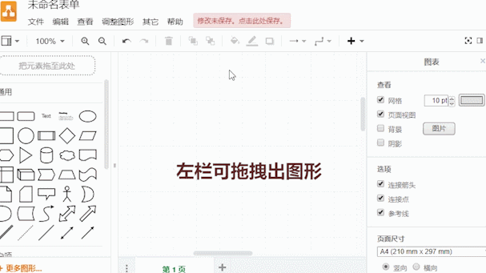

需求分析
如今，不少家庭都准备了医药箱。在遇到一些小毛病时，使用随身医箱可以方便快捷地解决问题。
我们可以尝试设计一款“随身医箱” App，做到随身“看病”。
阿卓根据任务情景，提出了一个初步要解决的任务问题
但是这个问题太过笼统，我们需要具体分析APP的需求来细化它
新知学习
接下来你会在问题提出、分解的过程中，学习解决关键问题的三大模块：
条件分支模块/初始化模块/过程模块
微课视频讲解与文字资料辅助学习，相信你没问题！
①微课视频-条件分支模块
②微课视频-初始化模块
③微课视频-过程模块
规划设计
讨论学习后，开始设计你心目中的APP吧！
请使用下方画图工具绘制两张图：APP的界面设计和功能逻辑框图，完成品请分别截图准备好上交。
（备注：切换语言时请点击起始页里面的“language”切换）
查看操作指南
